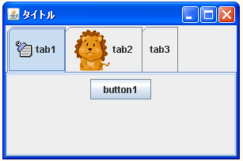

- Home ›
- Swing ›
- JTabbedPaneクラス
タイトルと画像を指定してタブを追加する
追加されたタブに表示できるものとしてタイトルの文字列以外に画像を表示することもできます。画像を表示するにはJTabbedPaneクラスで用意されている「addTab」メソッドを使います。今まで使ってきた「addTab」メソッドとは引数が異なっています。
addTab
public void addTab(String title,
Icon icon,
Component component)
title または icon、あるいはその両方 (どちらかは null でもかまわない) で 表される component を追加します。insertTab のカバーメソッドです。 パラメータ: title - このタブで表示されるタイトル icon - このタブで表示されるアイコン component - このタブをクリックしたときに表示されるコンポーネント
1番目の引数にタブに表示されるタイトルをString型の値で指定します。また3番目の引数にタブが選択された時に表示されるコンポーネントを指定します。このメソッドを使った場合には現時点で追加済みのタブの一番最後に新しくタブが追加されます。ここまでは今までと同じです。
そして2番目の引数には表示したい画像を表すIconインターフェースを実装したクラスのオブジェクトを指定します。JavaではIconインターフェースを実装したクラスとしてImageIconクラスが用意されていますので通常はImageIconクラスのオブジェクトを指定して下さい。(ImageIconクラスについては『ImageIconクラス』を参照して下さい)。
実際の使い方は次のようになります。
ImageIcon icon = new ImageIcon("./img/sample.png");
JTabbedPane tabbedpane = new JTabbedPane();
tabbedpane.addTab("title1", icon, new JButton("button1"));
指定のインデックスのタブの画像を設定する
タブを追加した後で、タブのインデックスを指定して画像を設定する方法を確認します。画像を設定するにはJTabbpedPaneクラスで用意されている「setIconAt」メソッドを使います。
setIconAt
public void setIconAt(int index,
Icon icon)
index のアイコンを icon に設定します。 null にすることもできます。これに
より、icon に無効なアイコンが設定されません。新しいアイコンが現在のアイ
コンと異なり、無効なアイコンが明示的に設定されていない場合、Look & Feel
に無効なアイコンを作成するように要求されます。無効な状態のアイコンを明示
的に設定する場合は、setDisableIconAt() を使用します。このアイコンのタブ
コンポーネントが指定されなかった場合、アイコンは表示されません。そのイン
デックスにタブがない場合は内部例外がスローされます。
パラメータ:
index - アイコンを設定するタブのインデックス
icon - タブに表示されるアイコン
例外:
IndexOutOfBoundsException - インデックスが範囲外の場合
(index < 0 || index >= タブの総数)
1番目の引数に画像を設定したいタブのインデックスを指定します。インデックスはタブが追加された順に割り振られた番号で最初のタブのインデックスは「0」となります。存在しないインデックスを指定すると例外が発生します。
2番目の引数には表示したい画像を表すIconインターフェースを実装したクラスのオブジェクトを指定します。これは「addTab」メソッドの場合と同じです。
実際の使い方は次のようになります。
ImageIcon icon = new ImageIcon("./img/sample.png");
JTabbedPane tabbedpane = new JTabbedPane();
tabbedpane.addTab("title1", new JButton("button1"));
tabbedpane.setIconAt(0, icon);
サンプルプログラム
では簡単なサンプルを作成して試してみます。
※今回使用させて頂いた画像は『牛飼いとアイコンの部屋』で公開されている画像を使用させて頂いています。
import javax.swing.*;
import java.awt.BorderLayout;
public class JTabbedPaneTest4 extends JFrame{
public static void main(String[] args){
JTabbedPaneTest4 frame = new JTabbedPaneTest4();
frame.setDefaultCloseOperation(JFrame.EXIT_ON_CLOSE);
frame.setBounds(10, 10, 300, 200);
frame.setTitle("タイトル");
frame.setVisible(true);
}
JTabbedPaneTest4(){
JTabbedPane tabbedpane = new JTabbedPane();
JPanel tabPanel1 = new JPanel();
tabPanel1.add(new JButton("button1"));
JPanel tabPanel2 = new JPanel();
tabPanel2.add(new JLabel("Name:"));
tabPanel2.add(new JTextField("", 10));
JPanel tabPanel3 = new JPanel();
tabPanel3.add(new JButton("button2"));
ImageIcon icon1 = new ImageIcon("./img/mem10.gif");
ImageIcon icon2 = new ImageIcon("./img/reo1s.gif");
tabbedpane.addTab("tab1", icon1, tabPanel1);
tabbedpane.addTab("tab2", tabPanel2);
tabbedpane.addTab("tab3", tabPanel3);
tabbedpane.setIconAt(1, icon2);
getContentPane().add(tabbedpane, BorderLayout.CENTER);
}
}
上記をコンパイルした後で実行すると次のように表示されます。

タブの高さは画像などの大きさによって自動的に拡張されます。また全てのタブの高さは最大のタブの高さに揃えられます。
( Written by Tatsuo Ikura )

著者 / TATSUO IKURA
初心者～中級者の方を対象としたプログラミング方法や開発環境の構築の解説を行うサイトの運営を行っています。